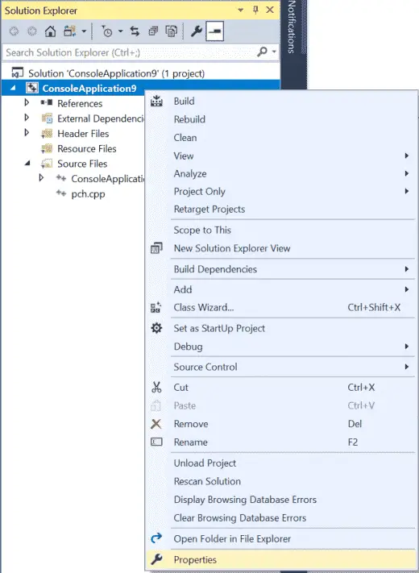
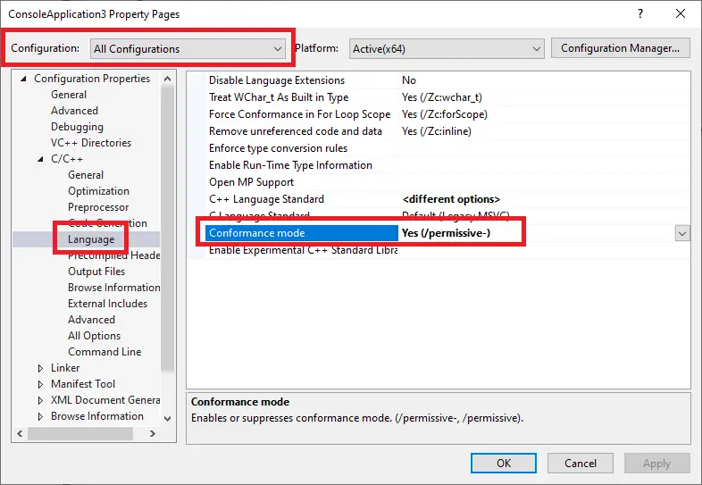
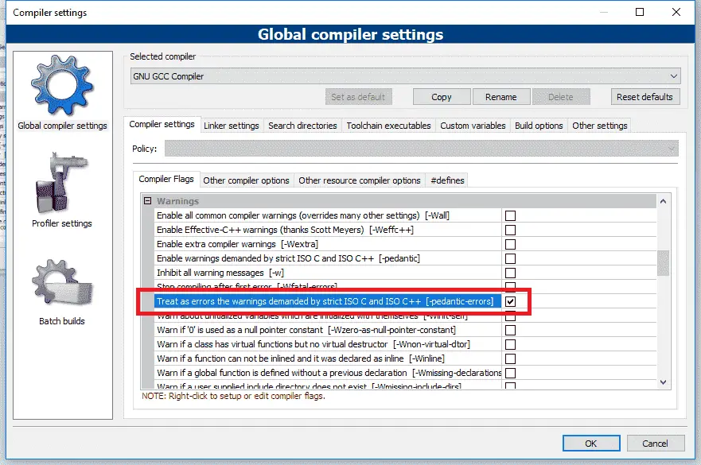

0.10 — 配置编译器：编译器扩展
C++ 标准规定了程序在特定情况下应如何行为。在大多数情况下，编译器会遵循这些规则。然而，许多编译器会对语言进行自己的修改，通常是为了增强与其他语言版本（例如 C99）的兼容性，或出于历史原因。这些编译器特定的行为被称为 编译器扩展。
编写使用编译器扩展的程序可以让您编写不符合 C++ 标准的程序。使用非标准扩展的程序通常不会在其他编译器（不支持相同扩展的编译器）上编译，即使编译成功，也可能无法正确运行。
令人沮丧的是，编译器扩展通常默认启用。这对初学者尤其有害，他们可能认为某些能够正常工作的行为是官方 C++ 标准的一部分，而实际上他们的编译器只是过于宽松。
由于编译器扩展并非必需，并且会导致您的程序不符合 C++ 标准，我们建议关闭编译器扩展。
最佳实践
禁用编译器扩展以确保您的程序（和编码实践）保持符合 C++ 标准，并能在任何系统上工作。
禁用编译器扩展
适用于 Visual Studio 用户
要禁用编译器扩展，请在 Solution Explorer 窗口中右键单击项目名称，然后选择 属性：

从 项目 对话框中，首先确保 配置 字段设置为 所有配置。
然后，点击 C/C++ > 语言选项卡，并设置 合规模式 切换到 是 (/permissive-) （如果尚未默认设置为此值）。

对于 Code::Blocks 用户
通过以下方式禁用编译器扩展： 设置菜单 > 编译器 > 编译器标志选项卡，然后找到并勾选 -pedantic-errors 选项。

对于 gcc 和 Clang 用户
您可以通过在编译命令行中添加 -pedantic-errors 标志来禁用编译器扩展。
对于 VS Code 用户
- 打开 tasks.json 文件，找到
"args"，然后找到行"${file}"在该部分中。 - 在
"${file}"行，添加一行包含以下命令：
"-pedantic-errors",
截至撰写本文时，VS Code 不会在缺少换行的代码文件末尾自动添加换行（C++ 标准严格要求这一点）。幸运的是，我们可以告诉 VS Code 执行此操作：
- 打开 VS Code 并进入 文件（若使用 Mac 则为“代码”）> 首选项 > 设置。这将打开一个设置对话框。
- 在搜索栏中输入
insert final newline - 在两者中 工作区设置 和 用户设置 选项卡，确保标有 文件：插入最终换行符 的复选框已勾选。
相关内容
Xcode 用户可以参阅 Rory 的评论，他热心地提供了说明。
提醒
这些设置是基于每个项目应用的。每次创建新项目时都需要设置它们，或者一次性创建具有这些设置的模板项目，然后使用该模板创建新项目。